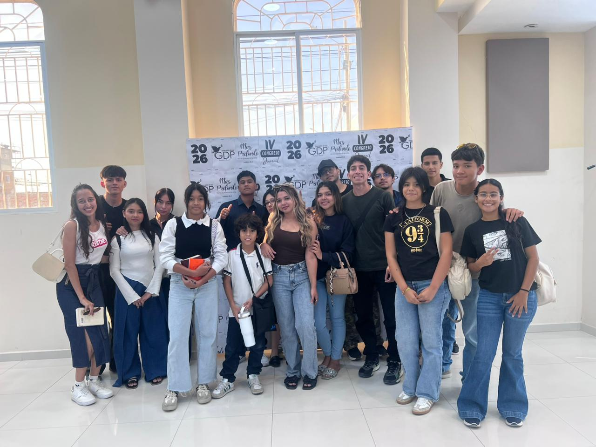

Bienvenidos
Hola esta es nuestra pagina oficial de la Iglesia Oasis Fuente De Amor!
Porque de tal manera amó Dios al mundo, que dio su hijo unigenito, para que todo aquel que en él crea no se pierda, mas tenga vida eterna.
Juan 3:16
Quienes somos?
La iglesia tiene una historia algo interesante somos una iglesia misionera. la iglesia principal se encuentra en estados unidos, aqui en manta ecuador hay dos iglsias una ubicada en circunavalación y otra ubicada ......
Horarios de culto
| Día | Tipo de cultos | Hora |
|---|---|---|
| Miercoles | Intercesión | 7:30 am |
| Viernes | Adoración e intercesión | 7:30 pm |
| Domingo | Familiar | 9:00 am |
Galería
Culto dominical

Culto de jóvenes
Contacto
Dirección. Circunvalación, Manta, Ecuador
Telefono: 0985979027
Email: iglesiaoasis@gmail.com